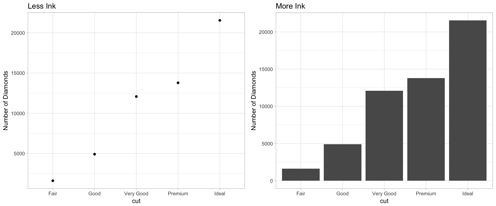
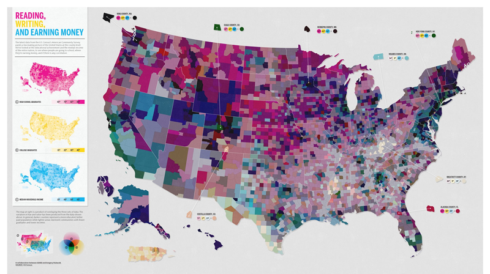
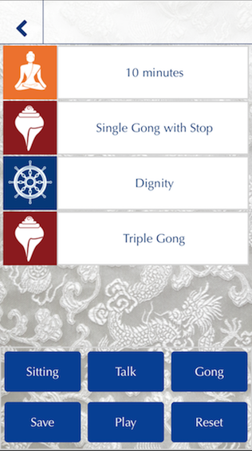

Data Visualization and UI design
Over the past couple of months, I’ve been rebuilding the Shambhala Meditation Timer using React Native and Redux. The idea behind the Shambhala app was to create a kind of modular framework for building meditation timers in order to allow people to create complex timers out of simple components. The three build blocks for a timer are time intervals, gong sounds, and recorded audio contemplations, and the user can stack these building blocks to create whatever kind of meditation session they want.
While I think the basic idea of the initial app was a good one, the implementation had a lot of problems. The user interface was confusing and there were a lot of counter-intuitive design decisions. Since I was the source of most of these decisions, I thought the release of version 2.0 of the app would be a good opportunity to write down some of the things I’ve learned.
I started programming in R because I was interested in data visualization, and what I’ve noticed working on this iteration of the Shambhala App is how much overlap there is between data visualization and user interface design. In particular there are three slogans that I’ve found useful for both problems:
1) Minimize the ink to information ratio
This is a slight restatement of one of Edward Tufte’s famous data visualization principles. The idea is that you should aim to be as efficient as possible with how much space you use to present your data. If you are selecting between different ways of displaying data, the best bet is to select the one which uses the least ink. This principle tends to pull you towards using lighter shapes to express data. For instance these two charts show the same information, but from a Tuftean perspective the one on the left is better because it displays the same information with less ink.
 The way this principle applies to UI design is to be efficient with the visual attention of your user. The user only has so much time and attention to devote to your application and they tend to like applications which don’t waste that attention. If you can convey the same amount of information with fewer visual items, then that will tend to improve the user experience.
2) Make use of Idioms
Idioms are bits of language whose meaning derives from their use rather than their content. For instance the phrase “It’s a piece of cake” is pretty confusing when read literally, but it communicates quite a lot because of how it’s typically used. The same is true in visual communication. People get used to certain shapes representing certain types of information, and it’s often better to go along with those preconceptions rather than trying to change them. For instance, the bar chart above is less efficient at communicating the data, but people tend to associate bar charts with counts, and so it’s often a good choice when you are communicating counts of a categorical variable.
In user interface design, this principle implies that you should pick your battles in terms of creating new visual forms. Make your buttons look like buttons, and your forms look like forms. A bad UI artifact that your user already understands is usually better than a great one that they need to learn.
3) If you have to explain something, you have a design problem
One of the biggest problems in both data visualization and user interface design is reducing mistakes. People don’t spend that long looking at visual displays of information, and so it’s important to focus their attention on what’s important. Here is a good example from fivethirtyeight:

It’s almost impossible to make a mistake reading this chart. The message it’s trying to send is that Steph Curry is having a way better season than you would expect, and the visuals of the chart convey that perfectly. There’s Steph, in bright yellow, way above the crowd of other players. It would be easy to add more information to this chart, for instance by coloring the chart by position, but doing so would create confusion. The design of the chart eliminates the need for that kind of explanation.
A bad chart on this metric is something like this one of reading, writing, and income in the United States:

This is a kind of interesting idea for a chart. The main map is a projection of the three small maps aimed at showing how the three factors interact. For instance if an area is high in reading and writing but low in income, it will be orange because it’s a mixture of pink and yellow. However, the overall effect is immensely confusing because it’s not clear what we’re supposed to be looking at. Because the reader’s scarce attention isn’t directed, it’s frustrating to try to understand the chart.
In the UI space, this principle often takes the form of controlling a user’s decisions. For instance if the user is in a place where it doesn’t make sense for them to push the save button, then don’t show them the save button. By reducing the number of options, you can guarantee that the user will not make mistakes. Usually a good warning sign that your UI is breaking this rule is when you start thinking about adding some text to explain what the user should do. If you have to explain, you probably have a design problem.
Shambhala App Home Screen

The initial version of the app had a black and white video of a flag playing behind the main menu. I personally liked the look of this screen quite a lot because it had a nice texture to it, and visually highlighted the history and tradition of the Shambhala community. This was also pretty much the only part of the app which was universally loved by our user testers so it was hard to say goodbye to.
The problem with the screen is that it has a very poor information-to-ink ratio. Most of the ‘ink’, or visual bandwidth, is taken up by the flag flapping in the background. It’s a moving, interesting image, and so it occupies a lot of the user’s attention. However, it provides no informational content beyond setting the context for the application. Since the video doesn’t really tell the user very much about what they should do or what they are doing, the attention they spend on it is somewhat wasted. The video was the design equivalent of empty calories: it tastes good but doesn’t provide much nutrition.
After taking out the video, I still wanted to maintain that kind of textured look, and thought that a brocade image might make a nice background. Brocade is used as framing for Buddhist paintings in India and Tibet, and so also has a a traditional feel. After trying a few different options we came up with one which provides a similar feel as the video, but without the visual clutter.

Session Builder
The main function of the app is that it lets you create timers by stacking different blocks together. This is a useful but novel way of constructing a timer, so it’s important that the visuals of the session builder are clear. Unfortunately, what we ended up with wasn’t that clear:

Each block on this screen represents a time segment which is either a time interval, a gong, or an audio recording of some meditation instructions. The problem with this screen is that we’re using the wrong idiom. Functionally, this screen is a swipable list like Google Inbox, but the initial design made it look like a bunch of buttons. It’s natural for the user to tap on each block as though they were buttons, but it’s not natural to use the swipe functionality to delete a block. In order to fix this I made use of visual idioms related to swipable lists. This included adding in little square icons and making the text portion of the block a standard colour.

The Player
The player screen on the app was the biggest visual improvement. The idea behind the player was that we would show the user a graph of their meditation session, so they could see how much time each block would take to play. It was also important to link the two screens together visually so that the user could understand the relationship between them. The initial block did this by expanding the height of each block proportional to its length, but in the new app we went with a simpler doughnut chart.

This illustrates all three slogans. First, the initial design of the player invited explanation. You wanted to say “no, those aren’t buttons, they represent the relative time for each block. And see? their outline changes colour when they are playing.” Additionally there are lots of buttons on the bottom which are only useful some of the time. Second, it is has a terrible information-to-ink ratio. The data visualization occupies almost all of the available pixels, but doesn’t really communicate all that much. Finally, it doesn’t use the right visual idioms, again using the ‘button’ idiom when we want something that says ‘timer’.
The revised screen does a much better job. It shows the relative time of each block in a pie chart around a big Play/Pause button, and the time remaining on the session is shown by changing the opacity of the timer. By doing this we use way less digital ink to show the same amount of information, and make use of a standard idiom for timer which is a circle with a button in the center.